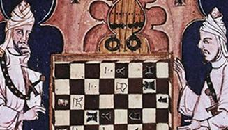

Chess History Book
Since 2008, I have been running a blog, Jewish Chess History. You are welcome to take a look. I have since been researching chess history in Mandatory Palestine and the early state of Israel, from 1918 to 1964. The result is Chess in the Jewish Community of Palestine and Israel: A History (with Shahar Gindi), forthcoming from McFarland Books, 2026.
This book provides the first comprehensive historical account of chess in the Jewish community of Mandatory Palestine and the early State of Israel, covering the period from 1918 to the 1964 Tel Aviv Olympiad. Drawing on archival documents, rare publications, recovered game scores, photographs, and institutional records, we reconstruct a dense cultural network of clubs, tournaments, journals, and personalities.
The narrative shows how chess developed alongside, and sometimes against, dominant ideological currents. Zionist culture often prioritized physical labor and agricultural renewal, yet chess persisted and grew through immigrant communities, café culture, educational initiatives, and civic organizations. The book documents underground clubs, stranded Olympiad teams, immigrant masters, and even theatrical “live chess” events staged in biblical costume.
Structured both chronologically and thematically, the work connects micro-histories of players and clubs with macro-level political and social change. Chess emerges not as an isolated hobby, but as a lens onto identity formation, cultural aspiration, and institutional development.
